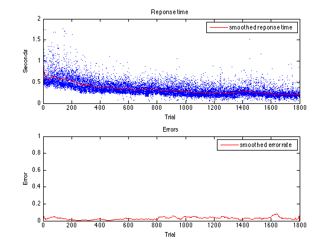
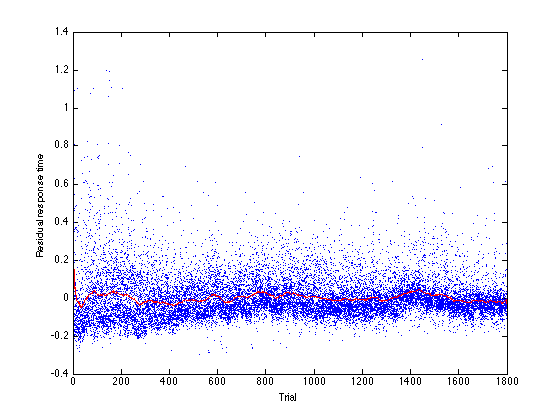
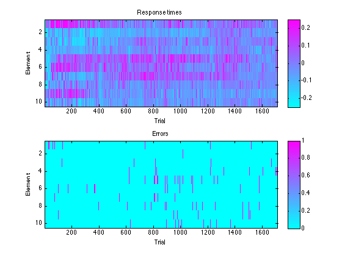
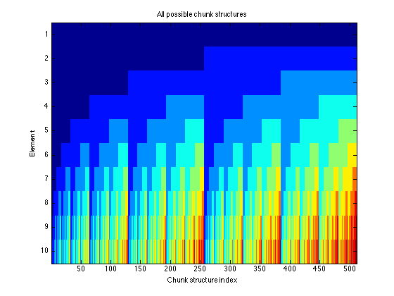
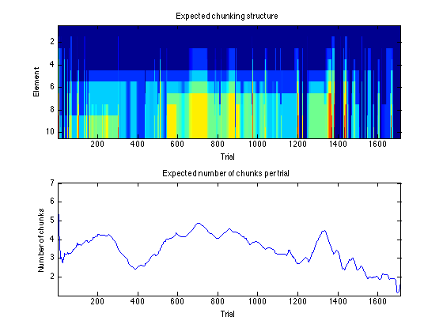
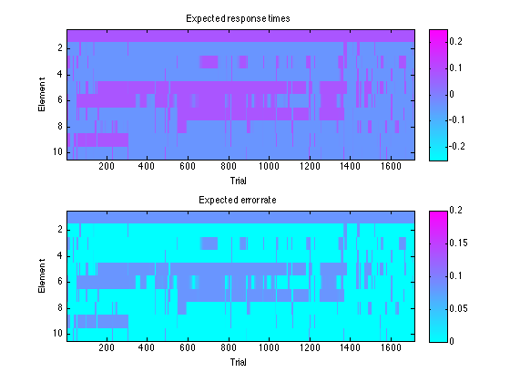

Contents
Load raw data
load('example_data/dsp_example.mat');
Preliminary visualizations
figure(1); clf; subplot(2, 1, 1); plot(rt_er_data.sequence_trial, rt_er_data.movement_time, '.'); hold on; h = plot(rt_er_data.sequence_trial, smooth(rt_er_data.movement_time, 500), 'r-'); legend(h, 'smoothed reponse time'); xlabel('Trial'); ylabel('Seconds'); title('Reponse time'); subplot(2, 1, 2); plot(rt_er_data.sequence_trial, rt_er_data.error, '.'); hold on; h = plot(rt_er_data.sequence_trial, smooth(rt_er_data.error, 500), 'r-'); legend(h, 'smoothed error rate'); xlabel('Trial'); ylabel('Error'); title('Errors');
Data detrending
Model
exponential_model = ['movement_time ~ a0' ... '+ a1*exp((b1/100)*(sequence_trial-1) + ' ... 'b2/10*(sequence_trial-1)*(sequence_press-1))']; initial_values = [0.18 0.38 -0.17, -0.1]; opts = statset('Display','off','TolFun',1e-5, ... 'MaxIter', 100); % Fit nlmf = NonLinearModel.fit(rt_er_data, ... exponential_model, initial_values, 'Options', opts); % Plot detrended response times figure(2); clf; plot(rt_er_data.sequence_trial, nlmf.Residuals(:, 'Raw'), '.'); hold on; plot(rt_er_data.sequence_trial, ... smooth(double(nlmf.Residuals(:, 'Raw')), 500), 'r-'); xlabel('Trial'); ylabel('Residual response time');
Response time and error matrices
% Create a response time and error matrix of trials vs element [rt_seq, er_seq] = mt_to_seq(rt_er_data, ... double(nlmf.Residuals(:, 'Raw')), ... rt_er_data.error); % Plot results figure(3); clf; subplot(2, 1, 1); imagesc(rt_seq', [-0.25 0.25]); colormap('cool'); colorbar; xlabel('Trial'); ylabel('Element'); title('Response times'); subplot(2, 1, 2); imagesc(er_seq', [0 1]); colorbar; xlabel('Trial'); ylabel('Element'); title('Errors');
Create space of chunk structures
chunk_structures = create_chunks_nospace('n_seqlen', size(rt_seq, 2)); figure(4); clf; % Plot space of chunks imagesc(chunk_structures'); xlabel('Chunk structure index'); ylabel('Element'); colormap('jet'); title('All possible chunk structures');
Find which chunk structure is present at each trial
[rho, self_t, log_like, fm, T, rho_er, v, v_er, ... initial_dist, mean_pause, mean_inchunk, ... mean_pause_er, mean_inchunk_er, ... chunks, cor_chunks, gamma] = ... chunk_hmm_learn_param(rt_seq, er_seq, 'verbose', true, ... 'fit_rt', true, 'fit_rt_rt', true, 'fit_er', true, 'fit_er_er', true, ... 'fit_T', true, 'fit_rho', true, 'fit_rho_er', true, ... 'chunks', chunk_structures); % compute mean and covariance of each chunk structure [chunk_means_rt, rt_cov, chunk_means_er, er_cov] = ... create_chunk_means_covs(chunks, cor_chunks, ... mean_pause, mean_inchunk, v, rho, ... mean_pause_er, mean_inchunk_er, v_er, rho_er);
Iteration: 1 (elapsed time: 1.1 s) rho = 0.100000 rho_er = 0.100000 self_t = 0.600000 v = 0.013430 v_er = 0.025124 mean_pause = 0.100000 mean_inchunk = 0.000000 mean_pause_er = 0.100000 mean_inchunk_er = 0.000000 log_like = 20300.059521 Iteration: 2 (elapsed time: 3.0 s) rho = 0.082806 rho_er = 0.078637 self_t = 0.579500 v = 0.010720 v_er = 0.024500 mean_pause = 0.084059 mean_inchunk = -0.032792 mean_pause_er = 0.066521 mean_inchunk_er = 0.010493 log_like = 22045.155245 Iteration: 3 (elapsed time: 4.8 s) rho = 0.099987 rho_er = 0.102163 self_t = 0.719305 v = 0.010209 v_er = 0.024868 mean_pause = 0.081127 mean_inchunk = -0.040155 mean_pause_er = 0.048858 mean_inchunk_er = 0.014744 log_like = 22284.144701 Iteration: 4 (elapsed time: 6.7 s) rho = 0.108398 rho_er = 0.117858 self_t = 0.761575 v = 0.010084 v_er = 0.024934 mean_pause = 0.080362 mean_inchunk = -0.042068 mean_pause_er = 0.045074 mean_inchunk_er = 0.016015 log_like = 22391.426335 Iteration: 5 (elapsed time: 8.5 s) rho = 0.109954 rho_er = 0.122651 self_t = 0.780786 v = 0.009988 v_er = 0.024934 mean_pause = 0.080973 mean_inchunk = -0.042938 mean_pause_er = 0.044961 mean_inchunk_er = 0.015940 log_like = 22451.881663 Iteration: 6 (elapsed time: 10.4 s) rho = 0.110961 rho_er = 0.125102 self_t = 0.785429 v = 0.009927 v_er = 0.024933 mean_pause = 0.081434 mean_inchunk = -0.043442 mean_pause_er = 0.044948 mean_inchunk_er = 0.015885 log_like = 22487.824352 Iteration: 7 (elapsed time: 12.2 s) rho = 0.111733 rho_er = 0.128155 self_t = 0.789902 v = 0.009900 v_er = 0.024939 mean_pause = 0.081568 mean_inchunk = -0.043693 mean_pause_er = 0.044615 mean_inchunk_er = 0.016016 log_like = 22503.468665 Iteration: 8 (elapsed time: 14.1 s) rho = 0.112291 rho_er = 0.129171 self_t = 0.792985 v = 0.009885 v_er = 0.024941 mean_pause = 0.081616 mean_inchunk = -0.043851 mean_pause_er = 0.044458 mean_inchunk_er = 0.016067 log_like = 22512.644389 Iteration: 9 (elapsed time: 15.9 s) rho = 0.113975 rho_er = 0.128973 self_t = 0.796204 v = 0.009870 v_er = 0.024941 mean_pause = 0.081663 mean_inchunk = -0.044013 mean_pause_er = 0.044454 mean_inchunk_er = 0.016038 log_like = 22521.037928 Iteration: 10 (elapsed time: 17.8 s) rho = 0.114810 rho_er = 0.128669 self_t = 0.798982 v = 0.009862 v_er = 0.024941 mean_pause = 0.081673 mean_inchunk = -0.044106 mean_pause_er = 0.044407 mean_inchunk_er = 0.016043 log_like = 22529.245143 Iteration: 11 (elapsed time: 19.6 s) rho = 0.114241 rho_er = 0.126559 self_t = 0.798344 v = 0.009851 v_er = 0.024938 mean_pause = 0.081716 mean_inchunk = -0.044207 mean_pause_er = 0.044554 mean_inchunk_er = 0.015948 log_like = 22527.280742
Plot results of algorithm
% Expected chunking structure figure(5); clf; subplot(2, 1, 1); imagesc((gamma * chunks)'); colormap('jet'); xlabel('Trial'); ylabel('Element'); title('Expected chunking structure'); subplot(2, 1, 2); n_chunks = apply(@(x)(length(unique(x))), chunks); % Expected number of chunk per trial (with some smoothing) plot(smooth(gamma * n_chunks, 100), '-') xlabel('Trial'); ylabel('Number of chunks'); title('Expected number of chunks per trial'); axis tight; % Meean response times and errors fitted by model expected_rt = gamma * chunk_means_rt; expected_er = gamma * chunk_means_er; figure(6); clf; subplot(2, 1, 1); imagesc(expected_rt', [-0.25 0.25]); colormap('cool'); colorbar; xlabel('Trial'); ylabel('Element'); title('Expected response times'); subplot(2, 1, 2); imagesc(expected_rt', [0 0.2]); colorbar; xlabel('Trial'); ylabel('Element'); title('Expected error rate'); 